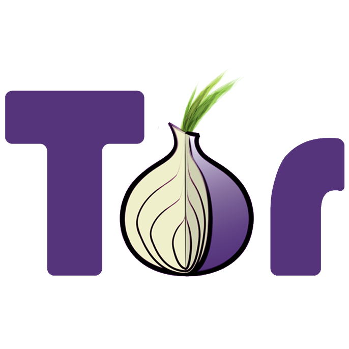
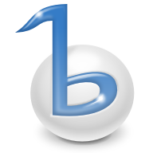
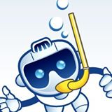

What is Open Source?
Open Source is everywhere...
On the next few pages you'll see a bunch of logos. Do you recognize the projects? Do you know what these projects do? Make your best guess, then click on the logos to find out more about them.
|  |  | ||
|  |
What do all of these projects have in common?
- You can run them for any purpose
- You can understand and change them
- You can share copies of them
- You can share your changed changed copies of them
These are called the "four freedoms". (No, not those ones, these ones!)
An essential part of the second freedom - freedom to understand - is access to the source code.
You can contribute in so many ways!
|
Documentation User interface design Code review Logos and branding Translation Reproducing bugs Quality assurance Sysadmining |
Website management Legal advice User support Publicity Testing Community management Creating tutorials ... and, yes, coding. |
Why contribute?
"Open source is important to me because it is a way to learn, to practice, and to share with others." - Angel "Java" Lopez
"The sense and strength of community is so powerful, that I couldn't have been happier to be a part of this movement, amazed and humbled by the craziest ideas and work that get shared. In simple words, it changed my life." - Soumith Chintala
"To me Open Source is a tool in the activist toolbox. It's how we can get things done without having to wait and ask permission, without having to build every. single. thing. we want before we can accomplish great things. We build on each other's work, we build up each other's work together." - Lukas Blakk